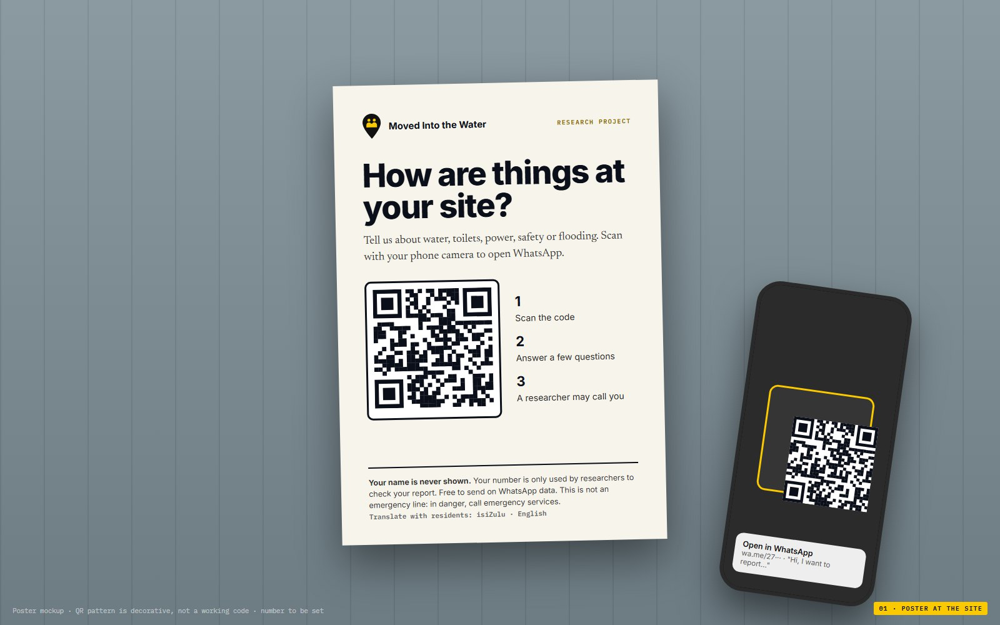

Moved Into the Water · design only

A WhatsApp Business number and a chat service with a server (in South Africa, often Turn.io or Praekelt) to ask the questions and pass answers into the review queue. Until then, researchers can enter WhatsApp reports by hand.
The researcher's phone call is the check. Numbers stay private, revealing one is logged, and nothing reaches the map until a researcher marks it verified.
This is human-subjects research: it needs ethics (IRB) approval and POPIA-compliant consent. Photos must be checked for faces, and residents should never be identifiable on the map.
Hollie and Wandile · Harvard GSD MDE. All chat messages, report numbers and the phone number are examples for design only. Frame 06 background: the current Conditions page.